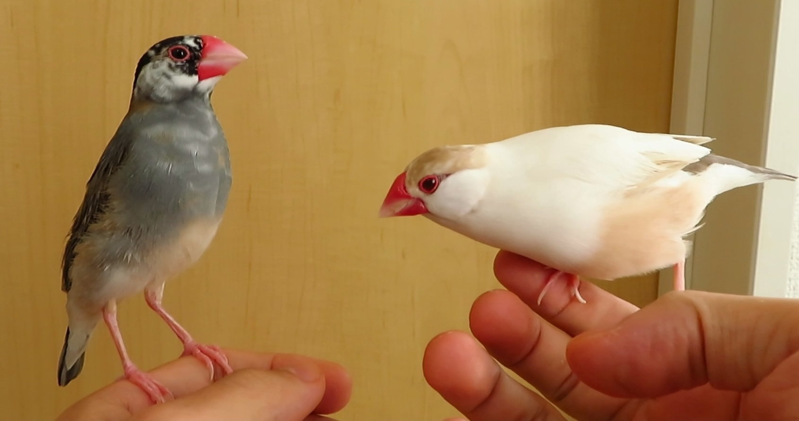

DeNA AI技術開発部AIイノベーショングループ
2026-03-24

Qiita: @birdwatcher X: @birdwatcherYT
こういう体験を実現したい:
（1ヶ月前）人間「パソコンが壊れた」 （今日）人間「パソコンを買ったよ」 → AI「前壊れたって言ってたもんね！」
1ヶ月間の対話を全部LLMに入れるわけにもいかないがどうすればいい...？
↓ LLMに与える情報を管理してあげる必要がある
無数に増えていく会話履歴やユーザー情報を

※ グラフDBで記憶を構造化管理するが、検索時のグラフ走査はなし
ライブラリを使えばOKというより、プロダクトの性質に合わせて設計する必要がある → 自分で作れるように、各手法や工夫を紹介していく
システム的に扱いやすい小さい単位（セッション）があれば会話履歴をそのまま扱う
[ {"role": "user", "content": "こんにちは！"}, {"role": "assistant", "content": "こんにちは！どうしましたか？"}, {"role": "user", "content": "この前、〇〇したんだよね〜"} ]
セッションまたいだら記憶が失われる対策
ChatGPTは直近15セッションの要約と噂がある（非公式） SimpleMemでは、セッション開始時にサマリー（~5件）→過去セッションの知見（~20件）→セマンティック検索（~10件）の優先度順で指定トークン上限まで入れる
サマリー（~5件）→過去セッションの知見（~20件）→セマンティック検索（~10件）

ChatGPTもこれに似た噂があり、わかっているフリならこれでOK （私は最近ChatGPTにメモリを整理しろと言われてますが、UI上からも抽出している情報が見えますね）
ベクトル検索で現在の会話内容に関連した過去の情報を取得

Mem0は、会話から事実をLLMで抽出し7カテゴリ（嗜好、個人情報、計画等）に分類 SimpleMemは、代名詞解決・相対時間の絶対化・アトミックな事実文への分解
BM25: 全文検索のスコア, RRF: 順位の逆数, MMR: 多様性確保, CrossEncoder: 質問と文書のスコア, Cohere: リランキングAPI（企業名）
Entity（ノード）とRelation（エッジ）をナレッジグラフに保存し、構造的に検索
LLMでCypherクエリ生成が難しい点はテンプレで解決（LangChain Neo4jはLLMで生成） 課題: 対策しても表記ゆれは起きる、遅い、LLM依存度が高く不安定
Agentがコンテキスト取得ツールを何度も呼び出し、目的のコンテキストを探す
一般会話での難しさについて経験談:

セッション終了後にテーマ分割・プロフィール抽出で一括保存し、 応答時は現在セッション＋検索でコンテキストを組み立てる

対話のたびに抽出・類似判定でDBを更新し、応答時は類似検索とラベルで取得する

ループして適応的に記憶検索ツールを使いこなし、必要なコンテキストを収集する
（簡易実装ではLangChainのcreat_agent、ADKのLlmAgent、MastraのAgent等のtoolsに与えるだけ）
creat_agent
LlmAgent
Agent
tools
1年前:「文鳥チノを飼っている」「文鳥がペレットを食べない」 1ヶ月前:「パソコンが壊れちゃった」「来月登壇イベントがあるんだ」 1週間前:「文鳥の雛にグラって名付けた」一昨日:「明後日キャンプ行くんだ」
前回の資料
今回の資料
AIと壁打ちしながらレポジトリを理解したメモ。一部実際に触ってみた感想。
AIアシスタントやエージェントに長期記憶レイヤーを提供するライブラリ
custom_fact_extraction_prompt
Graphitiベースの時系列ナレッジグラフを活用するコンテキストエンジニアリングプラットフォーム
短期記憶
lastN
Graphiti: 時系列ナレッジグラフ
長期記憶
valid_at
invalid_at
deleted_at
purgeDeleted
旧MemGPT。OSの仮想メモリ管理に着想を得たステートフルAIエージェントプラットフォーム
短期記憶: コアメモリ（ブロック）+ メッセージ要約
persona
human
CompactionSettings
長期記憶: アーカイバルメモリ + 会話検索
bge-reranker-v2-m3
conversation_search
is_deleted
工夫
対話エージェント向けの長期記憶フレームワーク
リアルタイムな保存処理
検索
セッション間の記憶
記憶整理: Consolidation Worker（Decay→Merge→Prune の3フェーズ）
汎用AIエージェント向けのMemory Operating System
保存: メッセージ追加時に全メモリタイプを同時生成
パーソナライズ対話AI向け。OSのメモリ管理メタファーを徹底した3層階層型アーキテクチャ
短期記憶（deque）
deque(maxlen=10)
中期記憶（セッション + FAISS + ヒープ）
長期記憶（プロフィール + ナレッジ）
ツール呼び出し型パーソナルエージェント向けのKGベース記憶管理ライブラリ 短期記憶
Context
長期記憶: ナレッジグラフ + Memory Module の二層構造
記憶整理
remove_old_memory(days)
アーキテクチャ
Microsoft GraphRAG。非構造テキストからLLMでナレッジグラフを構築するバッチ型パイプライン
保存時: ナレッジグラフ構築
検索時: 4つの戦略
LLMアプリケーション構築フレームワーク + ステートフルエージェント基盤
[cleared]
Google Agent Development Kit。エージェント構築フレームワーク。記憶管理はフレームワークの一機能
短期記憶: 多彩なコンテキスト制御
token_threshold
ContextCacheConfig
static_instruction
長期記憶: 3層のメモリサービス実装
メモリ取得の2パターン
LLMアプリケーション構築のためのデータフレームワーク
(1-decay)^hours
短期記憶: Compaction + Pruning の二段構成
[Old tool result content cleared]
skill
AGENTS.md
探索サブエージェント
Skills
MCP
ローカルファーストのパーソナルAIアシスタント
短期記憶: 段階的なコンテキスト削減
/compact
長期記憶: SQLite + sqlite-vec によるローカル完結型
memory/
memory/YYYY-MM-DD.md
MEMORY.md
時計/タイマー
タイトルのみページ番号スキップ
中央寄せ